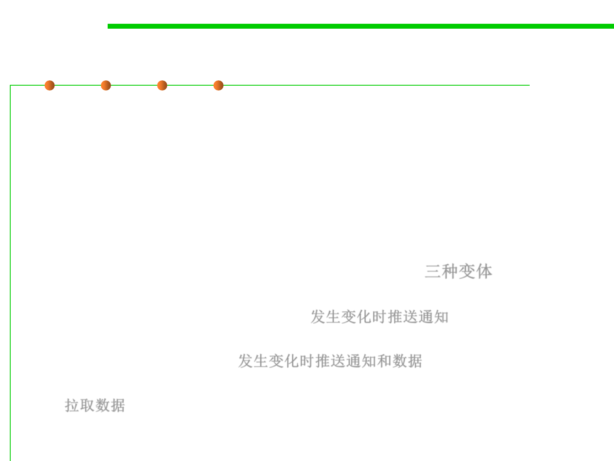

Observer Pattern
6.2 Design Patterns for Maintainability
▪ Models a 1-to-many dependency between objects
– Connects the state of an observed object, the subject with many observing
objects, the observers
▪ Usage:
– Maintaining consistency across redundant states
– Optimizing a batch of changes to maintain consistency
▪ Three variants for maintaining the consistency: 三种变体
– Push Notification: Every time the state of the subject changes, all the
observers are notified of the change 发生变化时推送通知
– Push-Update Notification: The subject also sends the state that has been
changed to the observers 发生变化时推送通知和数据
– Pull Notification: An observer inquires about the state the of the subject
拉取数据
▪ Also called Publish-subscribe.